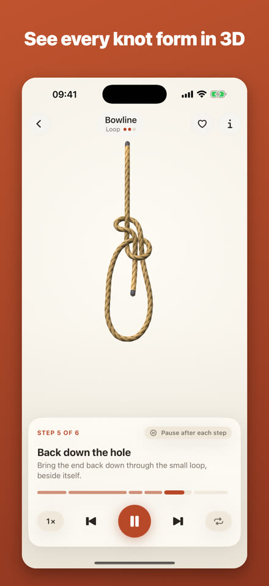
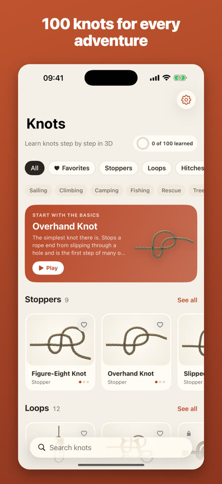
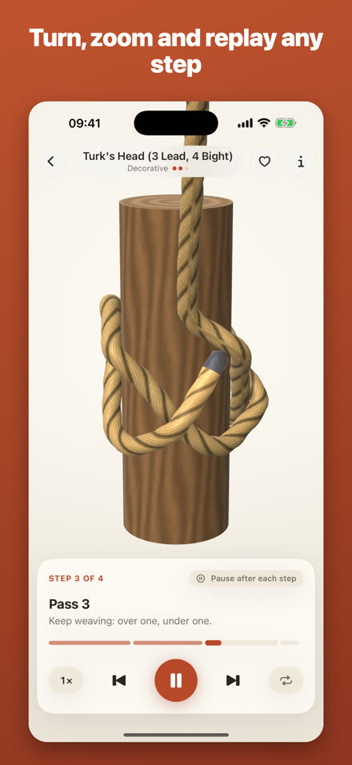
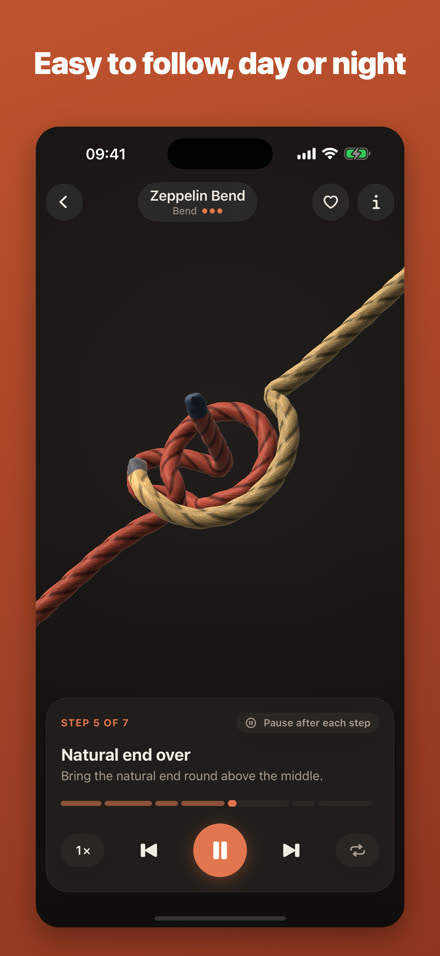
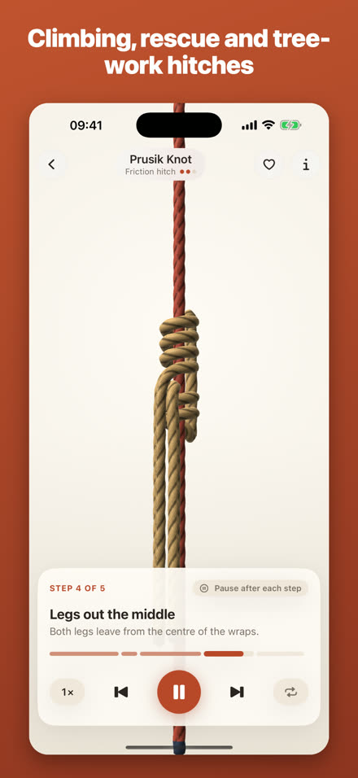

Learn 100 knots step by step in 3D.
Watch every knot form as a 3D animation you can turn, zoom and replay, then tie along with a real rope. Sailing, climbing, fishing, camping and more. Works offline.





100 knotsStoppers, loops, hitches, bends, fishing knots, lashings and Turk's heads.
Step by stepPause after each step, slow down to ¼ speed or loop.
PrivateNo account, no ads, no tracking.
17 knots are free. Unlock all 100 with a single one-time purchase; there is no subscription.
100 düğümü 3D olarak adım adım öğrenin.
Her düğümün döndürüp yakınlaştırabileceğiniz bir 3D animasyonla oluşmasını izleyin, elinizdeki iple birlikte bağlayın. Denizcilik, tırmanış, balıkçılık, kamp ve daha fazlası. İnternetsiz çalışır.
100 düğümDurdurucular, ilmikler, bağlar, eklemeler, balıkçı düğümleri, bağlamalar ve Türk başları.
Adım adımHer adımda durun, ¼ hıza düşürün ya da döngüye alın.
GizliHesap yok, reklam yok, takip yok.
17 düğüm ücretsiz. Tümünü (100) tek seferlik bir satın almayla açın; abonelik yok.